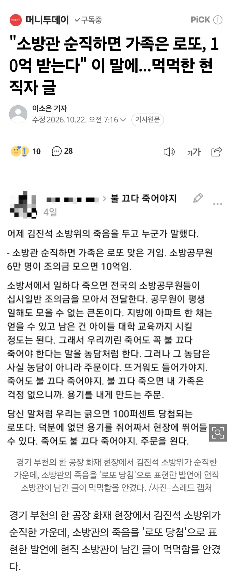

"소방관 순직하면 가족은 로또, 10억 받는다" 이 말에...먹먹한 현직자 글
댓글
너도 죽자
니 도덕적해이가 문제
너의 가치가 적으니 남의 가치를 적게 평가 하는거고
합리적으로 생각한것 같은데 그래서 너무 속상하다
진지하게 10억 VS 가족자식들 다놔두고 불타죽기... 가 비교가능하냐?
진짜 병신인가 불끄다 어쩔 수 없이 죽었을 경우지 누가 갑자기 10억받고 죽기 이지랄하노 병신임?
말하는거보니 애새끼구만
이 병신은 남의 호의를 당연한 권리로 쳐받는걸로 계산하네..
별 개 쌉소리 싸대면서 아 날카로운 지적이었어.
쿨병걸려가지고 헛소리 삘삘 싸대면서 일침한다 염병이지..
인성 터져가지고 이딴 소리 혹시 현실에서 하고다니면 친구없다.
ㅋㅋㅋㅋㅋㅋ
니는 진짜 어디가서 '아니 내가 틀린말했어? 맞잖아' 이런거 하지 마라
그냥 주댕이 처닫고 살아라 ㅋㅋ
너도 그러면 사망보험금 여러개 가입하고 2년 후 죽는건 어때?
진지하게 나랑 같은 인간인가 의심되는 답글이네....가정교육의 결과물이 이건가
당연히 소방관들이 십시일반 모아서 돕는거니 돕는거 자체는 옳은일이고 좋은일임.
하지만 표현이 문제라는거야 조의금을 로또라고 하는게 제정신이냐 이거야.
니가 지금 뒤지면 좋은거 아닌가?
물론 안죽는게 제일 좋지만 어쩔 수 없이 니가 나가 뒤지게 된다면?
건설현장직 주머니에서도 돈 뽑아서 뭉쳐드리면 로또격일걸?ㅋㅋ 절때 안하겠지만
12612 사는 동네에서도 그냥 모임을 하지? 자살 제외 사망 시 돈 모으는걸로
캬
니가 제일 문제야
에라이 씨ㅡ발새끼야
뭐가 문제지?(안경 척)
어쩔수 없는 일은 안생겨야지 미친새끼야
진짜 교육상태 심각하네
또또 친구없는 찐따새끼 일침충 말투ㅋㅋ
너는 그냥 어디 가서 니 의견을 말하지 마라.
그러다가 너만 욕 들어 쳐먹으면 다행인데..
너도 소방해 불끄다순직하면 니가족은 좋것네
얘들아 어그로에 밥주지마라
안죽는게 최고지 뭘 좋은거 아닌가야 씹새가
니도 시망보험들고 뒤지면 돈 많이 받음
가족 로또 맞은 거라고 말하는 건 사람이 맞나...
근데 저정돈 줘야지 가장이 목숨을 던질수있는거지
ㅋㅋㅋ 로또당첨이란다 사람새끼가 생각할수있는게 맞냐
경찰관, 군인, 공무원에 비해서 좀 영웅적으로 부각되는면은 있긴하지
그럼 뒤집어 생각해서 보면
저런 재난 상황에 직접적으로 관여하는 직종이 소방관 말고 뭐가 있을까
경찰 군인 일반공무원의 가치를 폄하하는게 아니라
그들은 그들의 본연의 업무를 하는거고
소방은 소방 본연의 업무를 하는데
그 본연의 업무가 소방은 재난현장이라는 곳에 가장 긴급하게 1차적으로 투입되는 인력이니까
상대적으로 영웅적인 면으로 부각될 수밖에 없지 않나 함
사회적 시선은 그럴수 있다고 보면서도 같은 공무원이면서 직렬만 다르다고 생명의 가치가 둘쭉날쭉해지는게 조금 안타깝긴해서
하는일이 영웅적인거 맞잖아.....
방화건 실화건 결국 인간이 원인인 재해인데 그거 피해 줄이러 가는건데....
당연히 영웅적이니까 영웅적으로 표현하는거지 다른 사람의 생명과 재산을 위해서 본인의 목숨을 던지는거잖아?
경찰도 살인범 잡다가 순직하면 영웅이라고 하지 안그럼?
소방관이라서 영웅이라고 하는게 아니라 영웅적인 행동을 했기에 영웅이라고 하는거야 그건 다른 직무도 모두 마찬가지야. 사람 목숨을 구하려하다 순직하면 소방관이 아니라 경찰이건 일반시민이건 다 영웅대접한다.
이렇게까지 부각은 안된다는거지 군 간부도 사고로 죽은거 이렇게까지 스포트라이트 안주잖아
사고로 죽은것은 안타까운일인데 아무래도 직접적으로 연관이 되어있냐의 여부도 따지니까 소방관역시 화재현장이 아닌 과로사같은경우는 거의 스포트라이트 받지 않음.
훈련하다가 죽는거 말하는거지 당연히 과로사 빼고
이정도 수준으로 스포트라이트 주면 하루종일 군사망사고만 접할걸?
여기서 핵심은 타인의 목숨을 직접적으로 구하다가 사망했을때라서 그건 조금 핀트가 다른것 같음
군인의 경우 파일럿이 전투기가 고장이나서 탈출해야하는데 민간구역이라서 민간인에게 피해가 갈까봐 탈출안하시고 조종해서 산에 추락해서 순직하신경우도있고 이런경우는 스포트라이트 받고 그랬음.
세상에는 수많은 죽음이 있고 어느하나 소중하지 않은 생명이 있겠냐만은 모든 죽음을 보도할 수도 없고 모든 죽음을 똑같이 대하기는 어려운 법이라서 그럼.
ㅇㅇ 그건 맞는말이라서 처음에 똑같은 생명이라도 소방관을 영웅적로 부각시켰다고 말한거임
무슨 말인지 이해는 되는데, 영웅적으로 부각 시켰다는 어조가 좀 이상함. 사실 어느 기업에서나 단체나 이미지 메이킹은 하지않음? 소방조직은 그게 잘 된 케이스인데 뭘 부각 시켰다고 부정적 어조로 글을 쓰는건지
다른 직종도 쉽지 않지만 소방관은 재해를 대면하니까 크기가 다른듯
누가 저런 발언을 한거야?
누리꾼
인간성이 얼마나 뒤져야 로또라는 말을
근데 저렇게 거의 의무적인 성금이면 아예 제도화시켜서 강제로 내게 하는게 낫지않나? 무임승차자도 없앨겸
강제로 안해도 어차피 99%이상 자발적으로 내고있음.
매번 국가적 재난 생길때마다 희생자들한테 조롱하던 새끼들이 매번 하는 말이잖아
보상금 얼마 받으니까 니들 로또 된거니까 좀 닥치라고 매번 조롱하더라
죽으면 로또, 재정빨대 ㅋㅋㅋㅋ
이나라는 군인 경찰관 소방관 대우를 너무 안해줌
조롱의 대상이면서 지금 지원하는 돈마저 아까워하고 ㅋㅋ
ㄹㅇ국회의원 이런새끼들 월급좀 줄이고 군/경/소방관 대우를 좀 더해주면 안되나
체감 되는 복지는 후자가 압도적인데
로또 ㅇㅈㄹ 미친새끼인가
죽기만하면 가족들은 인생역전 이라고 하지 왜
기자도 가족들이 로또맞으면 되겠네
개소리야 저 10억이 다른걸로 나옴?
소방관들 주머니로 나오는건데
왜 소방관들이 돈을 내는지부터 생각을해야지